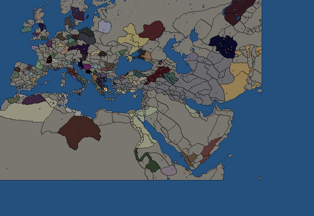

RTR: Imperium Surrectum
RTR: Imperium SurrectumAthens


- difficulty Very Difficult
- Greek culture
- believes
 Ionian
Ionian - 1 settlement
- capital Athens
- 11,000 manpower
- 3 characters
- 20 faction units
- 432 regional units
The campaign brief
"Since to be happy means to be free, and since to be free means to be brave, do not shy away from the risks of war." – Perikles of Athens
Chaire, it’s me! Let’s take a walk, my friend. Ah, how good it is to breathe the air of the Kerameikos, an air full of discoveries and ingenuity. Watch the potters, how they create the finest red figured vases. An Athenian invention, known throughout the Oikumene. My cousin’s wife said her brother lived in Massalia and the drinking vessels they use are made in the Kerameikos, and my sister’s husband says his uncle in Lykia, too, only drinks his Rhodian wine from an Athenian Kylix. Ignore the hucksters sitting in front of their houses, do not listen to their shouts, but respect the passion they show for their profession. Marvel at the skills of the ironsmiths and bronzesmiths, sons of Hephaistos himself, at the quality of their swords and daggers. Bath in the masses, feel the atmosphere that has filled this city ever since the days of Ephialtes, since the beginning of democracy. Leave the Kerameikos and enter the Agora, the centre of political life. For what is the life of a citizen if not politics? Is man not born a political animal?
The western side of the Agora is dominated by the magnificent Temple of Hephaistos, a place for the manufacturers of the Kerameikos, and for many members of the Metoikoi, the foreigners who live in our blossoming city. On the northern end, you will see history happening, where the stoics meet in the Stoa Poikile, the coloured hall. They discuss ideas that will change our lives for the better, led by the genius that is Zenon of Kition, who also taught me and made me the man I am. In the middle of the Agora, you will find merchants from places as far as Phoenicia or Italy offering goods from all over the world. How luxurious are the Persian clothes over there, the purple snails from Tyre here, how splendid the golden torques from Galatia and the gemstones of the Aethiopians! But beware, do not quickly spend all your hard-earned Obols on cheap trinkets, these days no one is safe from forgeries and deception!
Next, we are walking past the house of the Archon Basileus and the seat of the Strategoi, in the shadow of the Areios Pagos. Raise your eyes towards the mighty rock, where the noblest Athenians regularly meet to sit in judgement on those citizens who have violated the laws once given to us by Solon and Kleisthenes. Now, however, we stroll ahead, under the scorching midday sun, and follow the crowded road to the East, which is slowly rising under our feet. Look up and behold, towering above the city, the Akropolis: see the marvellous architecture of the colourful Parthenon, the stunning details of the Caryatids at the Erechtheion, and admire the elegance of the Temple of Nike. This holy mountain is not a work of the Gods, but a work of the Athenians: under the guidance of Perikles, our forefathers built these wonders, testimony to the incredible spirit and mind of the Athenians, us, the earthborn, the autochthonous inhabitants of Attika.
On the way down from the Akropolis we pass the Peripatos, where great thinkers are walking down the hallways and through the gardens, pondering on the makeup of the cosmos and the meaning of life. Have you spotted the old and wise man over there? He is no less than Straton of Lampsakos, the head of the school, who followed in the footsteps of the famous Theophrastos. What a view he has from this place, over the grand theatre of Dionysos, where Aischylos and Sophokles presented their world-renowned tragedies and comedies, towards the huge Olympieion, the largest temple in the Greek world… well, once it’s finished, that is. Beyond the city walls he will discover the Panathenaic stadium, which knows no rivals in either West or East!
But when he turns his gaze to the South, it will eventually rest on the Peiraeus. Thence the wooden walls of Themistokles set sail to face the fleet of the Medians and win the freedom of Hellas in the shallow waters of Salamis. But now, oh cruel Gods, our city, the queen of poleis, the earthborn dwelling of Pallas Athena, has to bear the insult of a foreign garrison in the Peiraeus. Ever since the disaster of Krannon and the suicide of our beloved Demosthenes, the filthy Macedonians have occupied our grand harbour. Our city became a toy in the wars of the Barbarian kings, and in the last decades many of our citizens left their ancestral home for far away shores, settling in new cities such as Alexandreia in Egypt and Antiocheia on the Orontes.
Yet even in the darkest of times, there is also hope. In the second year of the 123rd Olympiad (287 BC), King Ptolemaios of Egypt sent his loyal supporter Kallias, a citizen of Athens, to free the Akropolis and the city itself from the brutal soldiers of the Macedonians. The revered Kallias is now our ambassador to the son of Ptolemaios, and his ambassador to us, but the Peiraeus is still occupied and Oropos, a town that rightly belongs to us Athenians according to history, had to be ceded to the Boeotians, those pigs. King Seleukos be praised for returning Lemnos to the people of Athens before he died, but our empire is now not even a shadow of its former self. We helped the Aitolians to save Greece from the Celts only a few years ago, but who thanked us for our brave deeds?
Now is the time to act. Messengers have arrived from Queen Arsinoe, the Sister-Wife of Ptolemaios the Younger, to ask for an alliance. They promise that the Lakedaimonians, our old arch enemies, are on our side, and the Achaians, too, will join in with us and the Egyptians in working towards a most noble goal: to liberate Greece from the Macedonian yoke. Listen to me, my friends, my fellow citizens. Are we not proud Athenians? Are we not the offspring of the Earthborn, of Aigeus and Theseus? Listen to me, Chremonides, son of Eteokles of the Demos Aithalidai, of the tribe of Leontis, member of an old and honourable Athenian family. For is it not true that to be happy means to be free, and to be free means to be brave? But if to be free really means to be brave, do not shy away from the war against the Macedonians! Athens will rise, and our people will reclaim what is rightfully theirs! May Pallas Athena lead us to victory!"
Starting settlements
Athens begins with 1 settlement and 11,000 manpower.
What is already built in each settlement
Athens, in Attike: Treasury, Governor's Palace, Small Stone Wall, Homeland, Region Information Scroll, Paved Roads, Mead Brewer (Rural), Local Market, Shipwright, Pottery Kiln (Urban), Contour Furrows (Crops), Mines (Industry), Barracks and Armoury
Starting diplomacy
Allied with (4):  Achaean League ·
Achaean League ·  Boeotians ·
Boeotians ·  Ptolemaic Empire ·
Ptolemaic Empire ·  Sparta
Sparta
Trade agreements with (4):  Achaean League ·
Achaean League ·  Boeotians ·
Boeotians ·  Ptolemaic Empire ·
Ptolemaic Empire ·  Sparta
Sparta
At peace with every other faction.
Like every faction, it is also at war with the  Free Peoples, who hold every settlement no faction does.
Free Peoples, who hold every settlement no faction does.
Starting characters
| Name | Role | Age | Name | Role | Age | Name | Role | Age | |||
|---|---|---|---|---|---|---|---|---|---|---|---|
| Philochoros | General | 70 | Chremonides | General | 50 | Sosistratos | Admiral | 40 |
Faction mechanics
From the game's own guide. See also the other game guides.
Special Mechanics
Athens has a mercenary centre in the capital, check its Region Information Building for more details.
Military reforms
Athens has two reforms.
Athenian reforms 1 requirements: Control 10 cities
Unlocks: Thureophoroi
Athenian reforms 2 requirements: Have at least 1 huge city.
Unlocks: Athenian Tarentine Cavalry, Aspidophoroi
Reforms
For every faction: Military innovations have arrived!, Second wave of military innovations have arrived!.
Units you can recruit
The same as in the main campaign.